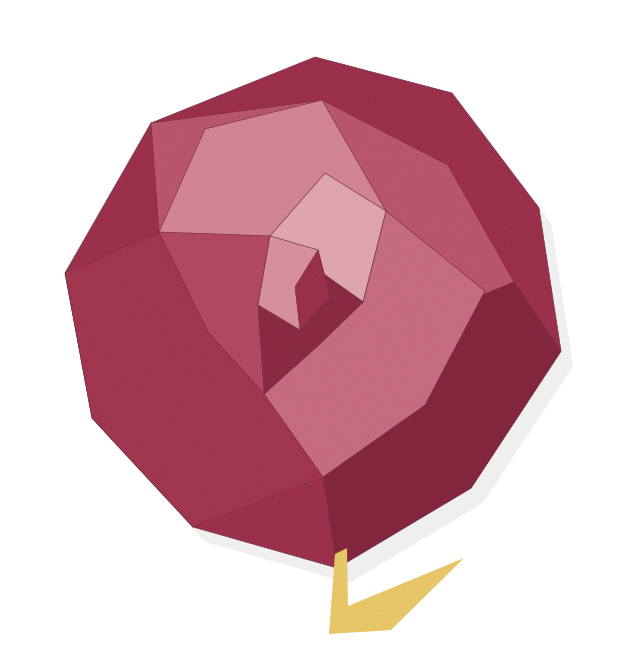
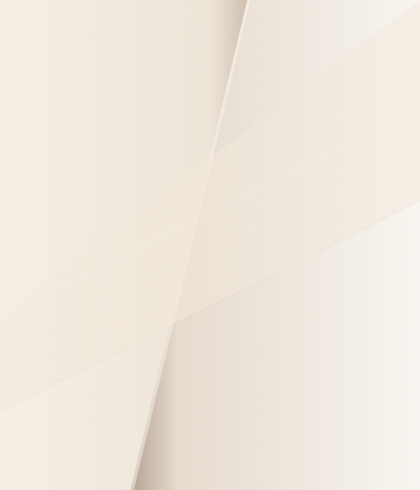
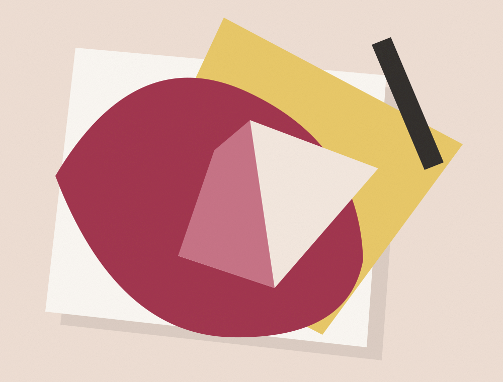

EL BOSQUE · CÁDIZUNA IDENTIDAD ENTRE PLIEGUES
La Rosade Papel.

UN GESTO DE PAPEL.C. la Rosa, 22
11670 El Bosque, Cádiz
LA ROSA DE PAPEL634 048 158UN PEQUEÑO UNIVERSO VISUAL
El nombre,
en su propia forma.
LA ROSA
DE PAPEL.
EL BOSQUE · CÁDIZ
Un juego de formas, texturas y tinta.
Una identidad visual inspirada en el papel.
EL LENGUAJE VISUALCuestión
Cuestión
de pliegues.
Recortar. Superponer. Doblar.
El papel como punto de partida gráfico.


Exploraciones gráficas de la identidad.
Composiciones ilustrativas, no productos del establecimiento.
UNA DIRECCIÓN EN EL BOSQUE
Por aquí.
LA ROSA DE PAPELDesde
El Bosque.
El Bosque.
ENCUÉNTRANOS
LA ROSA DE PAPEL
CALLE LA ROSA, 2211670 EL BOSQUE, CÁDIZABRIR GOOGLE MAPS (nueva pestaña)CONTACTO DIRECTOEstamos